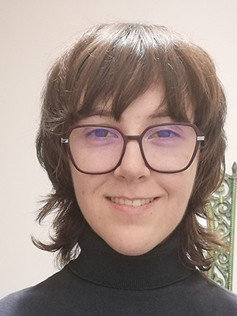

About Me
"To err is human, to really foul things up requires a computer." - Bill Vaughan
I was born in Nottingham, England on the 15th of November, 1996 and immigrated to Canada with my family in 1998.
I went to SCHS and graduated in 2014 with an ICT SHSM diploma.
I studied Animation at Algonquin from September 2014 until December 2019 after dropping out of first year once and failing second year twice.
I currently live with my twin sister in a house previously owned by our late father in Kanata.
I was recommended this program by a friend who'd graduated from it earlier this year, and I decided to enroll because this program seemed to blend creative and technical work together in a way that interested me.
I hope that I can graduate from this program and be able to secure a job using the skills I've learned during my time here.
I love drawing and animating. I also enjoy playing video games and listening to music. Art is important to me and a lot of my hobbies and interests revolve around it.
Some of my favourite video games are:
- Silent Hill 2
- Elden Ring
- Team Fortress 2
And here's my top three bands:
- Radiohead
- Queens of the Stone Age
- Gorillaz